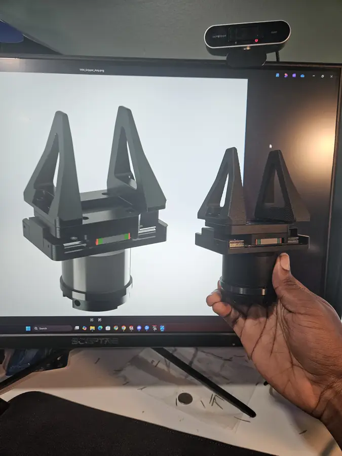
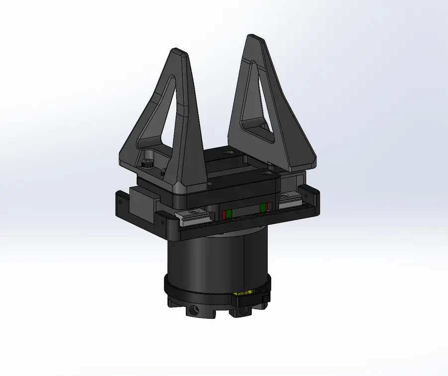
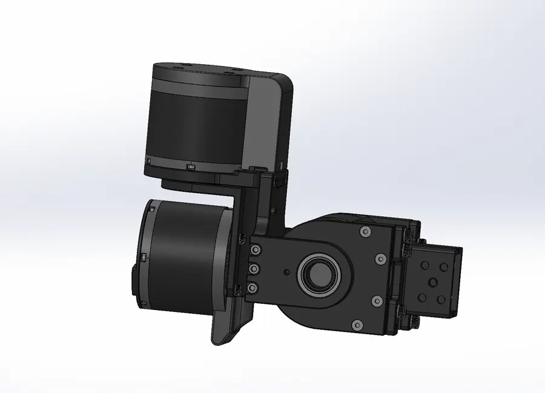
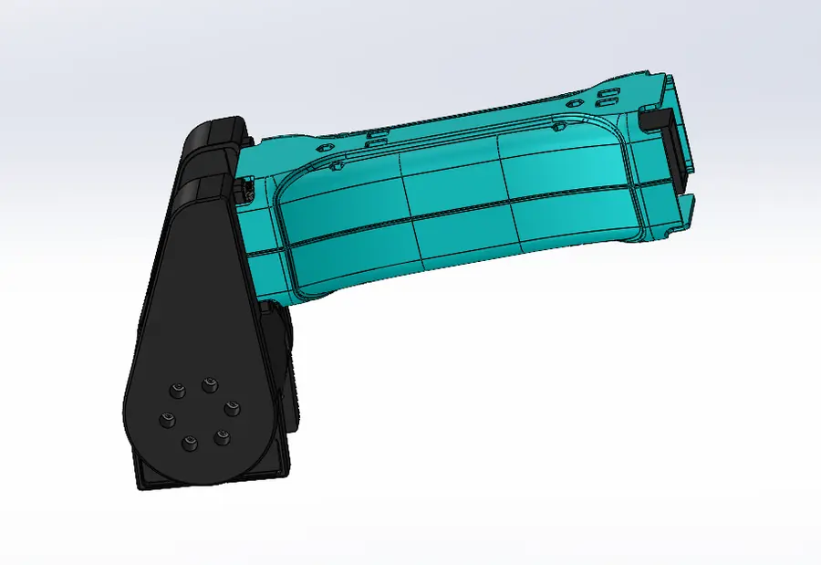
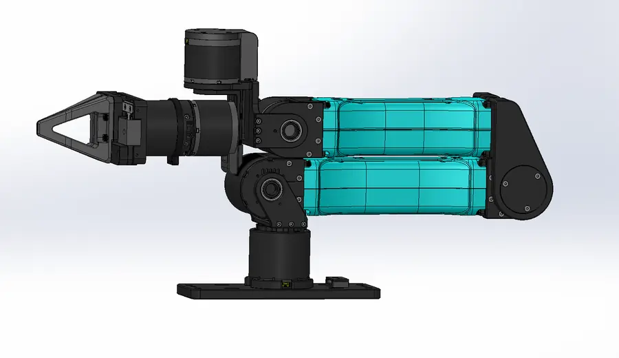
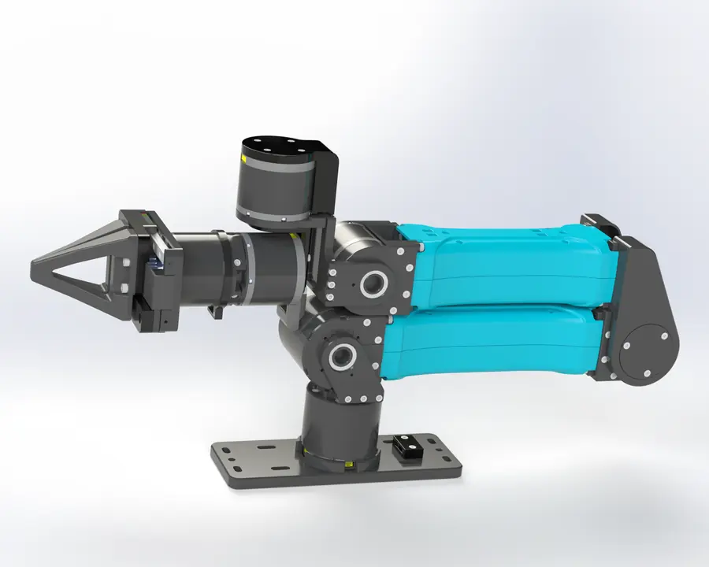
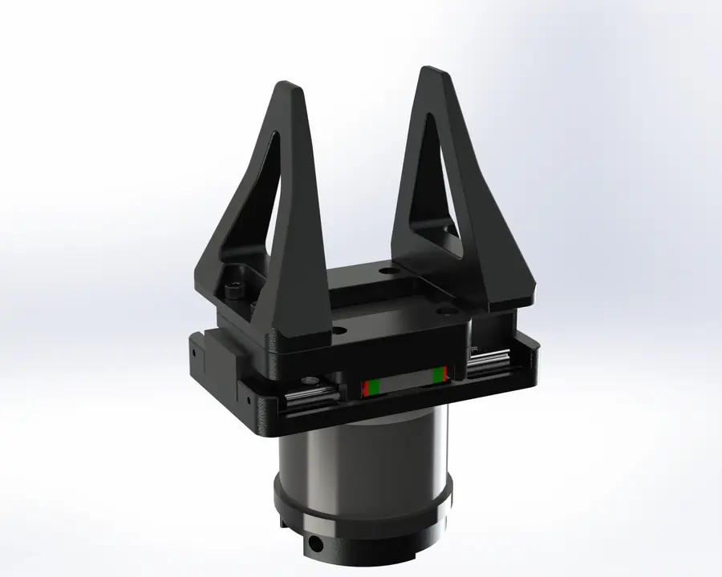
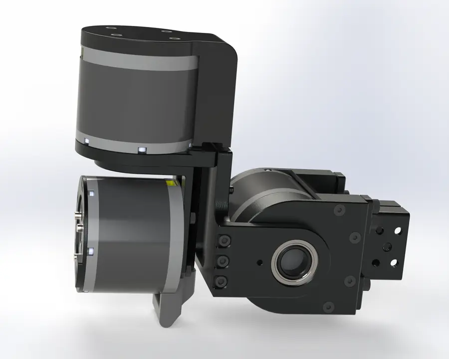
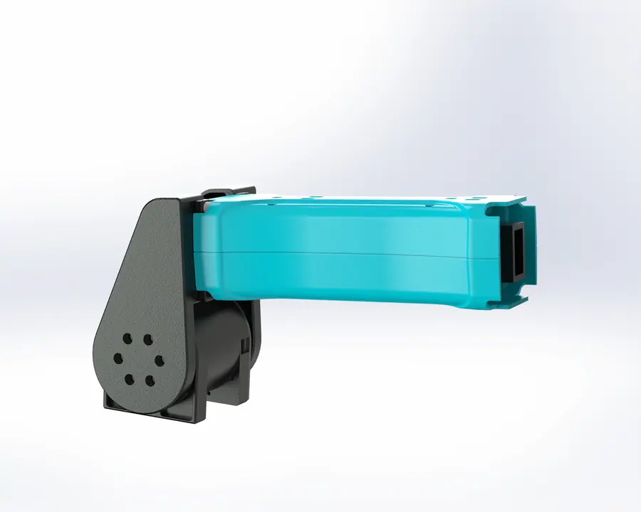

Why rebuild an arm that already exists?
i2rt's YAM is a 6-DoF arm with a parallel gripper that sells for about $3,000. It ships with an MIT-licensed Python SDK, simulation models and leader-follower teleoperation support. That combination has made it a common platform for collecting robot demonstrations and deploying vision-language-action (VLA) models. Training those models, though, takes fleets of arms, and i2rt's supply chain couldn't deliver them in that volume.
The answer was an independent supply chain, which starts with a complete, manufacturable model of the arm. I was tasked with all of it: reverse-engineering the arm, designing each of its parts in SolidWorks, and organizing the supply chain to build it at scale.
Process
- Teardown and measurement. Disassembling each subassembly and capturing the geometry of every part.
- Part-by-part modeling. Rebuilding each part in SolidWorks as a clean, editable model rather than a dumb scan.
- Assembly verification. Reassembling the gripper, wrist, elbow and links in CAD and checking them against the physical hardware.
- Manufacturing and sourcing. Matching each part to a process and organizing vendors so the arm can be produced in volume.





Renders



